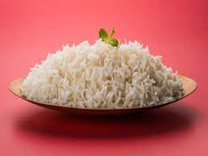

Rice

Instructions
Ingredient(s):
Directions:
- Slowly descend to lie in a fetal position on the ground as you realize you ability to make rice is no better than a racoon's attempt to hula-hoop
- Pour the rice into the rice pot and fill with water an inch above the rice level
- Sift and wash the rice until the water becomes milky
- Pour the water out and repeat the process 2-3 times until water is close to clear
- Fill pot with clean water one last time an inch above rice level
- Place pot into rice cooker and flip dat switch
- Realize that your mom is home and rice isn't ready so you layer your underwear so that the ass beating is less physically traumatizing than it is emotionally